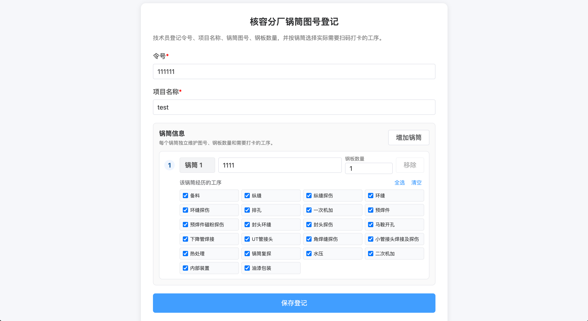

1
登记锅筒图号
操作人：分厂技术员 操作方式：在电脑端操作
点击看原型 ›
标准动作
- 填写生产令号、项目名称；按实际锅筒逐个登记锅筒图号。
- 每个锅筒必须填写钢板数量；钢板数量用于备料、纵缝、纵缝探伤、环缝、环缝探伤等数量工序的进度计算。
- 按锅筒勾选实际需要打卡的工序；不同锅筒可以有不同工序，不要求所有锅筒完全一致。
- 如果令号或图号已存在，优先保留已打卡记录和二维码，不随意重建历史数据。